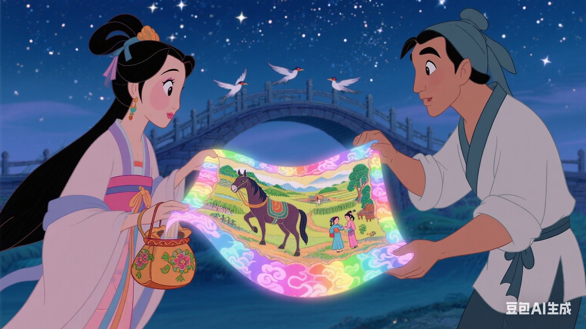

星河浩渺，鹊桥初架，牛郎织女遥望千年等待的重逢。
牛郎牵着儿女，踏着鹊桥一步步靠近，每一步都承载着一年的思念。
织女轻提裙摆，向爱人奔去，仙裙在星风中飘动如绽放的花朵。
终于相拥，泪水化作星子洒落，千言万语尽在不言中。
儿女依偎在父母怀中，好奇地听着织女讲述天上的趣事。
织女为牛郎拭去风霜，指尖的温柔融化了一年的辛劳。
星河流转，夜色渐深，离别的愁绪悄悄爬上心头。
织女将亲手织就的云锦送给牛郎，那是她对人间生活的思念。
雄鸡报晓，鹊桥渐散，他们约定明年此时再续前缘。

星河依旧，思念永恒，七夕的传说在人间代代相传。